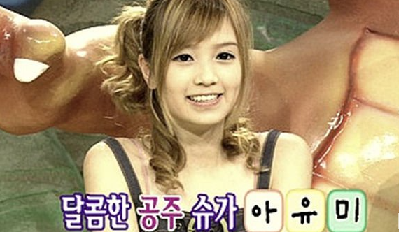

아버지는 대한민국 국적의 재일교포 2세, 어머니는 대한민국 충청도에서 태어나고 자란 토종 한국인이다.
어머니의 일본 유학 도중 부모가 만나 결혼했다.
일본 돗토리시립 고야마 초등학교(鳥取市立湖山小学校)와 돗토리시립 고토 중학교(鳥取市立湖東中学校)를 졸업했다. 중학교 1학년때 들었던 우타다 히카루의 곡에 충격을 받고 그 후 가수를 지망해왔고, 1998년 중학교 2학년 때, 어머니와 대한민국에 있는 외할머니 댁에 놀러왔다가 H.O.T. 콘서트를 보러 갔고, 콘서트에서 돌아오는 길에 서울 명동에서 캐스팅되었다.